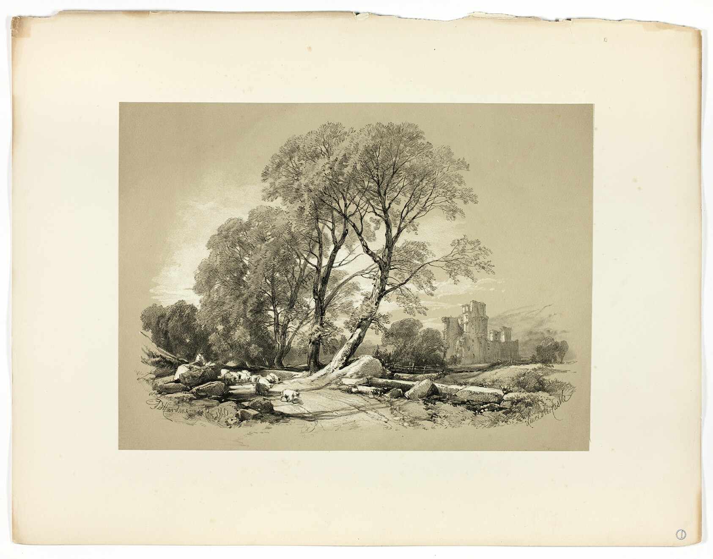
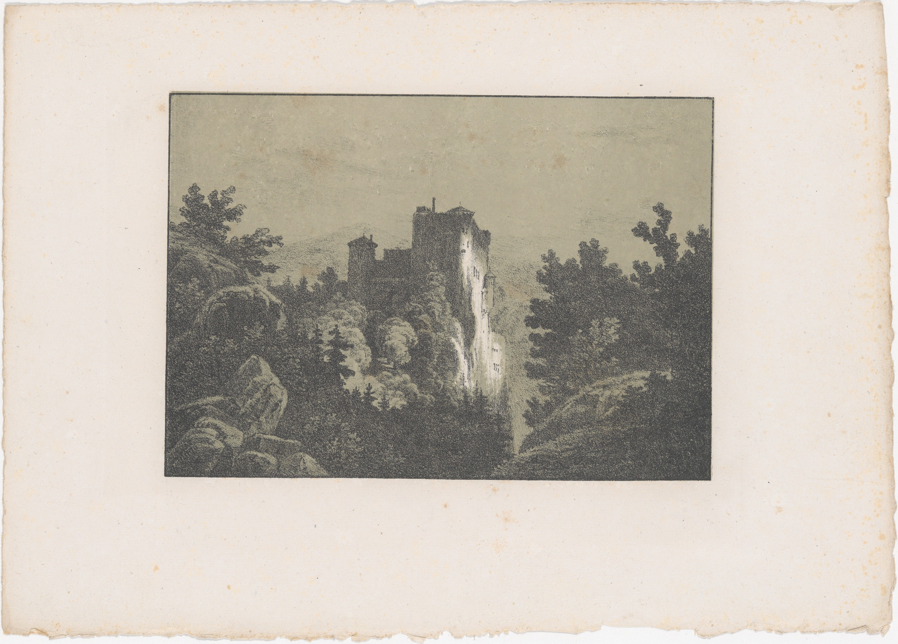
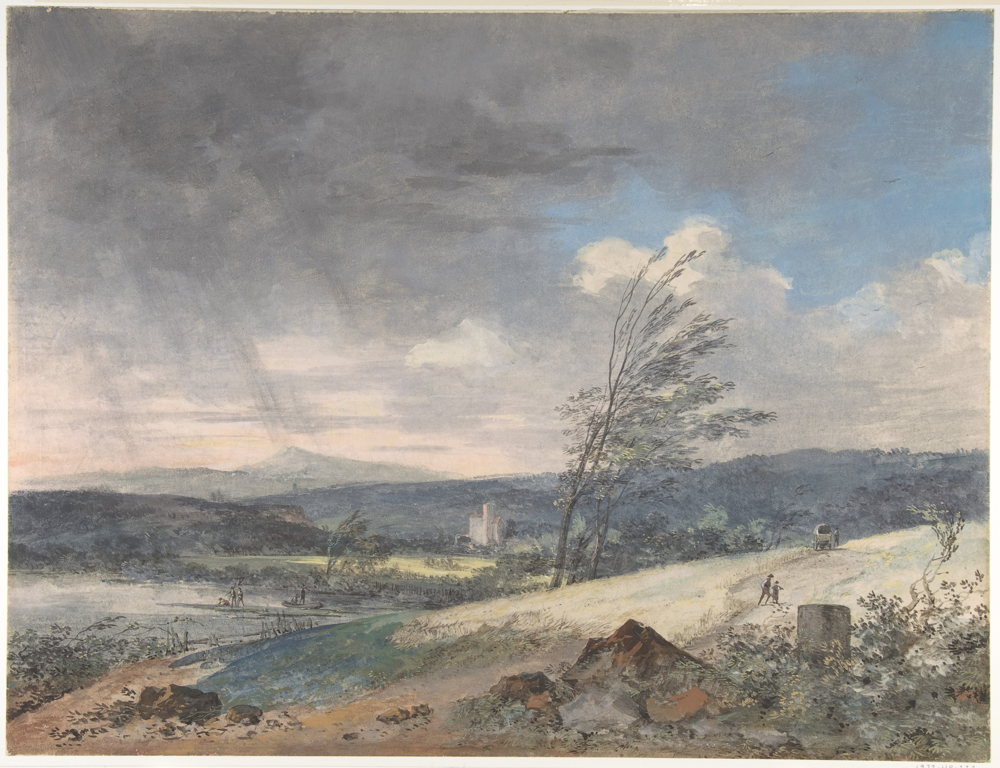

utkarsh/uzis about archive works soon/detour utkarsh
the archive makes you you get over with it but you can’t so it helps you to get over with it



archived by utkarsh/uzis for soon*detour archive